| A | B | C | D | E | F | G | H | I | J | K | L | |
|---|---|---|---|---|---|---|---|---|---|---|---|---|
1 | Afbeelding | nr | Titel | Serie | Reeks | Auteur | Bijzonderheden | Meer info | Druk | Conditie | prijs | Selecteer |
2 | 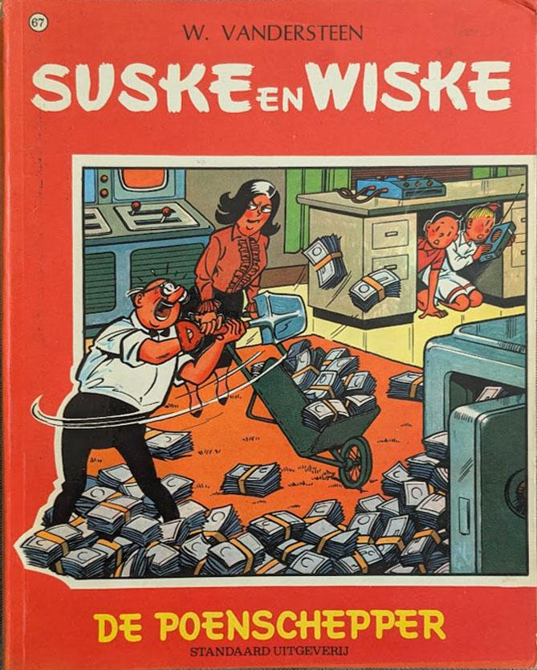 | 67 | De poenschepper | Suske & Wiske | 4-kleurenreeks | Willy Vandersteen | 02/07/1968 | goed | ||||
3 | 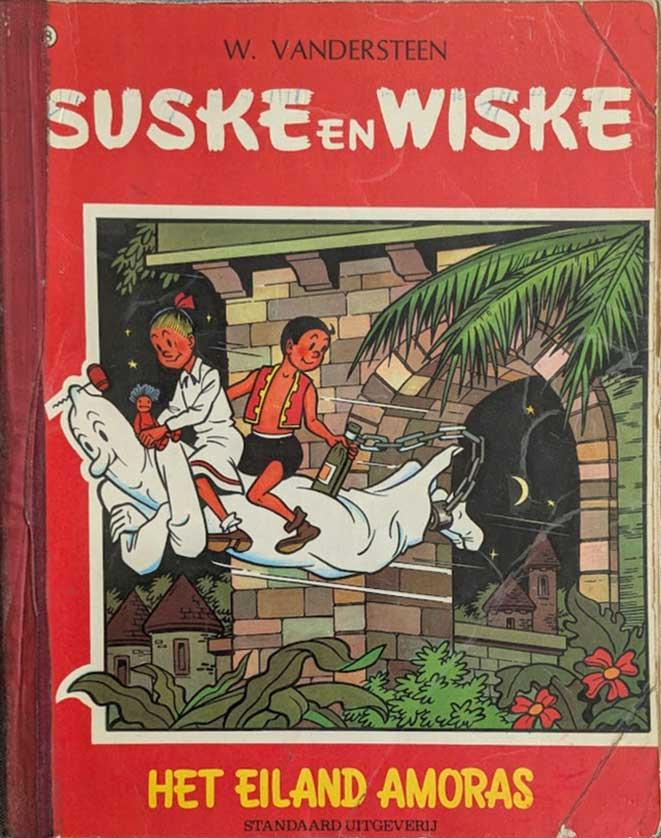 | 68 | Het eiland Amoras | Suske & Wiske | 4-kleurenreeks | Willy Vandersteen | plakbad aan de zijkant | 02/07/1968 | slecht | |||
4 | 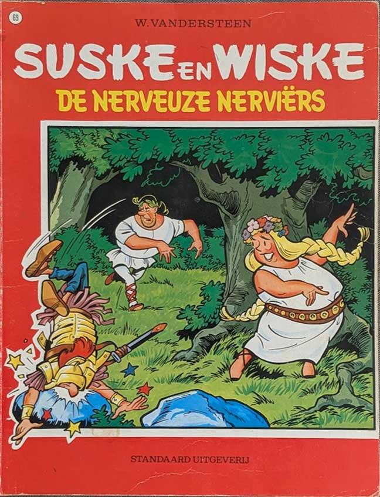 | 69 | De nerveuze Nerviërs | Suske & Wiske | 4-kleurenreeks | Willy Vandersteen | | |||||
5 | 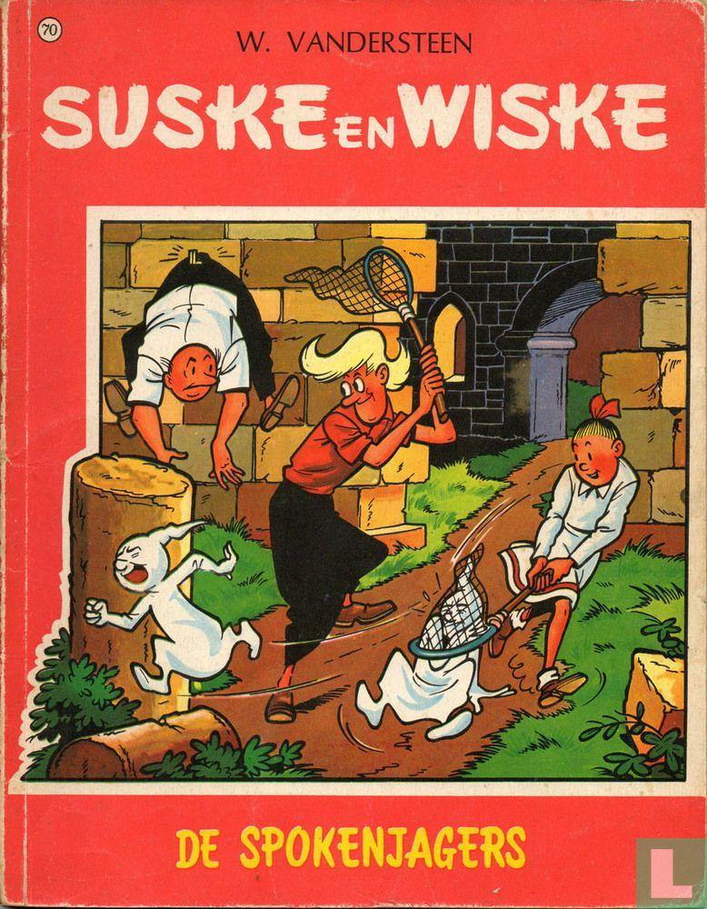 | 70 | De spokenjagers | Suske & Wiske | 4-kleurenreeks | Willy Vandersteen | | |||||
6 | 71 | Wattman | Suske & Wiske | 4-kleurenreeks | Willy Vandersteen | | ||||||
7 | 72 | Jeromba de Griek | Suske & Wiske | 4-kleurenreeks | Willy Vandersteen | | ||||||
8 | 73 | Het zoemende ei | Suske & Wiske | 4-kleurenreeks | Willy Vandersteen | | ||||||
9 | 74 | De koddige kater | Suske & Wiske | 4-kleurenreeks | Willy Vandersteen | | ||||||
10 | 75 | Het mini-mierennest | Suske & Wiske | 4-kleurenreeks | Willy Vandersteen | | ||||||
11 | 76 | De ijzeren schelvis | Suske & Wiske | 4-kleurenreeks | Willy Vandersteen | | ||||||
12 | 77 | De apekermis | Suske & Wiske | 4-kleurenreeks | Willy Vandersteen | | ||||||
13 | 78 | De dulle griet | Suske & Wiske | 4-kleurenreeks | Willy Vandersteen | | ||||||
14 | 79 | De zeven snaren | Suske & Wiske | 4-kleurenreeks | Willy Vandersteen | | ||||||
15 | 80 | De brullende berg | Suske & Wiske | 4-kleurenreeks | Willy Vandersteen | | ||||||
16 | 81 | De circusbaron | Suske & Wiske | 4-kleurenreeks | Willy Vandersteen | | ||||||
17 | 82 | De gramme huurling | Suske & Wiske | 4-kleurenreeks | Willy Vandersteen | | ||||||
18 | 83 | De straatridder | Suske & Wiske | 4-kleurenreeks | Willy Vandersteen | | ||||||
19 | 84 | De stemmenrover | Suske & Wiske | 4-kleurenreeks | Willy Vandersteen | | ||||||
20 | 85 | De schone slaper | Suske & Wiske | 4-kleurenreeks | Willy Vandersteen | | ||||||
21 | 86 | Tedere Tronica | Suske & Wiske | 4-kleurenreeks | Willy Vandersteen | | ||||||
22 | 87 | De vliegende aap | Suske & Wiske | 4-kleurenreeks | Willy Vandersteen | | ||||||
23 | 88 | De tamtamkloppers | Suske & Wiske | 4-kleurenreeks | Willy Vandersteen | | ||||||
24 | 89 | De dolle musketiers | Suske & Wiske | 4-kleurenreeks | Willy Vandersteen | | ||||||
25 | 90 | Sjeik El Rojenbiet | Suske & Wiske | 4-kleurenreeks | Willy Vandersteen | | ||||||
26 | 91 | De speelgoedzaaier | Suske & Wiske | 4-kleurenreeks | Willy Vandersteen | | ||||||
27 | 92 | De briesende bruid | Suske & Wiske | 4-kleurenreeks | Willy Vandersteen | | ||||||
28 | 93 | De snorrende snor | Suske & Wiske | 4-kleurenreeks | Willy Vandersteen | | ||||||
29 | 94 | De sissende sampan | Suske & Wiske | 4-kleurenreeks | Willy Vandersteen | | ||||||
30 | 95 | De kleppende klipper | Suske & Wiske | 4-kleurenreeks | Willy Vandersteen | | ||||||
31 | 96 | Het rijmende paard | Suske & Wiske | 4-kleurenreeks | Willy Vandersteen | | ||||||
32 | 97 | De junglebloem | Suske & Wiske | 4-kleurenreeks | Willy Vandersteen | | ||||||
33 | 98 | Het hondenparadijs | Suske & Wiske | 4-kleurenreeks | Willy Vandersteen | | ||||||
34 | 99 | De kwakstralen | Suske & Wiske | 4-kleurenreeks | Willy Vandersteen | | ||||||
35 | 100 | Het gouden paard | Suske & Wiske | 4-kleurenreeks | Willy Vandersteen | | ||||||
36 | 101 | De kaartendans | Suske & Wiske | 4-kleurenreeks | Willy Vandersteen | | ||||||
37 | 102 | De dromendiefstal | Suske & Wiske | 4-kleurenreeks | Willy Vandersteen | | ||||||
38 | 103 | De klankentapper | Suske & Wiske | 4-kleurenreeks | Willy Vandersteen | | ||||||
39 | 104 | De wilde weldoener | Suske & Wiske | 4-kleurenreeks | Willy Vandersteen | | ||||||
40 | 105 | De koning drinkt | Suske & Wiske | 4-kleurenreeks | Willy Vandersteen | | ||||||
41 | 106 | De charmante koffiepot | Suske & Wiske | 4-kleurenreeks | Willy Vandersteen | | ||||||
42 | 107 | De sprietatoom | Suske & Wiske | 4-kleurenreeks | Willy Vandersteen | | ||||||
43 | 108 | Twee toffe totems | Suske & Wiske | 4-kleurenreeks | Willy Vandersteen | | ||||||
44 | 109 | De wolkeneters | Suske & Wiske | 4-kleurenreeks | Willy Vandersteen | | ||||||
45 | 110 | De zingende zwammen | Suske & Wiske | 4-kleurenreeks | Willy Vandersteen | | ||||||
46 | 111 | De schat van Beersel | Suske & Wiske | 4-kleurenreeks | Willy Vandersteen | | ||||||
47 | 112 | De groene splinter | Suske & Wiske | 4-kleurenreeks | Willy Vandersteen | | ||||||
48 | 113 | Het geheim van de gladiatoren | Suske & Wiske | 4-kleurenreeks | Willy Vandersteen | | ||||||
49 | 114 | De Tartaarse helm | Suske & Wiske | 4-kleurenreeks | Willy Vandersteen | | ||||||
50 | 115 | De gezanten van Mars | Suske & Wiske | 4-kleurenreeks | Willy Vandersteen | | ||||||
51 | 116 | De bronzen sleutel | Suske & Wiske | 4-kleurenreeks | Willy Vandersteen | | ||||||
52 | 117 | De toornige tjiftjaf | Suske & Wiske | 4-kleurenreeks | Willy Vandersteen | | ||||||
53 | 118 | De gouden cirkel | Suske & Wiske | 4-kleurenreeks | Willy Vandersteen | | ||||||
54 | 119 | Het sprekende testament | Suske & Wiske | 4-kleurenreeks | Willy Vandersteen | | ||||||
55 | 120 | De geverniste zeerovers | Suske & Wiske | 4-kleurenreeks | Willy Vandersteen | | ||||||
56 | 121 | De duistere diamant | Suske & Wiske | 4-kleurenreeks | Willy Vandersteen | | ||||||
57 | 122 | De kale kapper | Suske & Wiske | 4-kleurenreeks | Willy Vandersteen | | ||||||
58 | 123 | De zwarte zwaan | Suske & Wiske | 4-kleurenreeks | Willy Vandersteen | | ||||||
59 | 124 | Het vliegende bed | Suske & Wiske | 4-kleurenreeks | Willy Vandersteen | | ||||||
60 | 125 | De Texasrakkers | Suske & Wiske | 4-kleurenreeks | Willy Vandersteen | | ||||||
61 | 126 | De windmakers | Suske & Wiske | 4-kleurenreeks | Willy Vandersteen | | ||||||
62 | 127 | De knokkersburcht | Suske & Wiske | 4-kleurenreeks | Willy Vandersteen | | ||||||
63 | 128 | Het brommende brons | Suske & Wiske | 4-kleurenreeks | Willy Vandersteen | | ||||||
64 | 129 | Prinses Zagemeel | Suske & Wiske | 4-kleurenreeks | Willy Vandersteen | | ||||||
65 | 130 | De steensnoepers | Suske & Wiske | 4-kleurenreeks | Willy Vandersteen | | ||||||
66 | 131 | Het zingende nijlpaard | Suske & Wiske | 4-kleurenreeks | Willy Vandersteen | | ||||||
67 | 132 | De stierentemmer | Suske & Wiske | 4-kleurenreeks | Willy Vandersteen | | ||||||
68 | 133 | De tuf-tuf-club | Suske & Wiske | 4-kleurenreeks | Willy Vandersteen | | ||||||
69 | 134 | De witte uil | Suske & Wiske | 4-kleurenreeks | Willy Vandersteen | | ||||||
70 | 135 | De gekke gokker | Suske & Wiske | 4-kleurenreeks | Willy Vandersteen | | ||||||
71 | 136 | De bokkerijders | Suske & Wiske | 4-kleurenreeks | Willy Vandersteen | | ||||||
72 | 137 | De ringelingschat | Suske & Wiske | 4-kleurenreeks | Willy Vandersteen | | ||||||
73 | 138 | Bibbergoud | Suske & Wiske | 4-kleurenreeks | Willy Vandersteen | | ||||||
74 | 139 | De boze boomzalver | Suske & Wiske | 4-kleurenreeks | Willy Vandersteen | | ||||||
75 | 140 | De zwarte madam | Suske & Wiske | 4-kleurenreeks | Willy Vandersteen | | ||||||
76 | 141 | Het bevroren vuur | Suske & Wiske | 4-kleurenreeks | Willy Vandersteen | | ||||||
77 | 142 | De mottenvanger | Suske & Wiske | 4-kleurenreeks | Willy Vandersteen | | ||||||
78 | 143 | De malle mergpijp | Suske & Wiske | 4-kleurenreeks | Willy Vandersteen | | ||||||
79 | 144 | Lambiorix | Suske & Wiske | 4-kleurenreeks | Willy Vandersteen | | ||||||
80 | 145 | De stalen bloempot | Suske & Wiske | 4-kleurenreeks | Willy Vandersteen | | ||||||
81 | 146 | De sterrenplukkers | Suske & Wiske | 4-kleurenreeks | Willy Vandersteen | | ||||||
82 | 147 | De poppenpakker | Suske & Wiske | 4-kleurenreeks | Willy Vandersteen | | ||||||
83 | 148 | De lachende wolf | Suske & Wiske | 4-kleurenreeks | Willy Vandersteen | | ||||||
84 | 149 | De gladde glipper | Suske & Wiske | 4-kleurenreeks | Willy Vandersteen | | ||||||
85 | 150 | Het Spaanse spook | Suske & Wiske | 4-kleurenreeks | Willy Vandersteen | | ||||||
86 | 151 | Het ros Bazhaar | Suske & Wiske | 4-kleurenreeks | Willy Vandersteen | | ||||||
87 | 152 | De bevende Baobab | Suske & Wiske | 4-kleurenreeks | Willy Vandersteen | | ||||||
88 | 153 | De nare varaan | Suske & Wiske | 4-kleurenreeks | Willy Vandersteen | | ||||||
89 | 154 | Rikki en Wiske in Chocowakije | Suske & Wiske | 4-kleurenreeks | Willy Vandersteen | | ||||||
90 | 155 | De poezelige poes | Suske & Wiske | 4-kleurenreeks | Willy Vandersteen | | ||||||
91 | 156 | Beminde Barabas | Suske & Wiske | 4-kleurenreeks | Willy Vandersteen | | ||||||
92 | 157 | De mollige meivis | Suske & Wiske | 4-kleurenreeks | Willy Vandersteen | | ||||||
93 | 158 | De vinnige viking | Suske & Wiske | 4-kleurenreeks | Willy Vandersteen | | ||||||
94 | 159 | De minilotten van Kokonera | Suske & Wiske | 4-kleurenreeks | Willy Vandersteen | | ||||||
95 | 160 | De bokkige bombardon | Suske & Wiske | 4-kleurenreeks | Willy Vandersteen | | ||||||
96 | 161 | De blinkende boemerang | Suske & Wiske | 4-kleurenreeks | Willy Vandersteen | | ||||||
97 | 162 | De gouden locomotief | Suske & Wiske | 4-kleurenreeks | Willy Vandersteen | | ||||||
98 | 163 | De vlijtige vlinder | Suske & Wiske | 4-kleurenreeks | Willy Vandersteen | | ||||||
99 | 164 | De raap van Rubens | Suske & Wiske | 4-kleurenreeks | Willy Vandersteen | | ||||||
100 | 165 | De sputterende spuiter | Suske & Wiske | 4-kleurenreeks | Willy Vandersteen | | ||||||
101 | 166 | De maffe maniak | Suske & Wiske | 4-kleurenreeks | Willy Vandersteen | | ||||||
102 | 167 | De zingende kaars | Suske & Wiske | 4-kleurenreeks | Willy Vandersteen | | ||||||
103 | 168 | De Efteling-elfjes | Suske & Wiske | 4-kleurenreeks | Willy Vandersteen | | ||||||
104 | 169 | De amoureuze amazone | Suske & Wiske | 4-kleurenreeks | Willy Vandersteen | | ||||||
105 | 170 | De olijke olifant | Suske & Wiske | 4-kleurenreeks | Willy Vandersteen | | ||||||
106 | 171 | Walli de walvis | Suske & Wiske | 4-kleurenreeks | Willy Vandersteen | | ||||||
107 | 172 | Het laatste dwaallicht | Suske & Wiske | 4-kleurenreeks | Willy Vandersteen | | ||||||
108 | 173 | Het drijvende dorp | Suske & Wiske | 4-kleurenreeks | Willy Vandersteen | | ||||||
109 | 174 | Het statige standbeeld | Suske & Wiske | 4-kleurenreeks | Willy Vandersteen | | ||||||
110 | 175 | De kadulle Cupido | Suske & Wiske | 4-kleurenreeks | Willy Vandersteen | | ||||||
111 | 176 | De pompenplanters | Suske & Wiske | 4-kleurenreeks | Willy Vandersteen | | ||||||
112 | 177 | De adellijke ark | Suske & Wiske | 4-kleurenreeks | Willy Vandersteen | | ||||||
113 | 178 | De stoute steenezel | Suske & Wiske | 4-kleurenreeks | Willy Vandersteen | | ||||||
114 | 179 | De windbrekers | Suske & Wiske | 4-kleurenreeks | Willy Vandersteen | | ||||||
115 | 180 | Het kregelige ketje | Suske & Wiske | 4-kleurenreeks | Willy Vandersteen | | ||||||
116 | 181 | De perenprins | Suske & Wiske | 4-kleurenreeks | Willy Vandersteen | | ||||||
117 | 182 | De koperen knullen | Suske & Wiske | 4-kleurenreeks | Willy Vandersteen | | ||||||
118 | 183 | De toffe tamboer | Suske & Wiske | 4-kleurenreeks | Willy Vandersteen | | ||||||
119 | 184 | De Regenboogprinses | Suske & Wiske | 4-kleurenreeks | Willy Vandersteen | | ||||||
120 | 185 | De botte botaknol | Suske & Wiske | 4-kleurenreeks | Willy Vandersteen | | ||||||
121 | 186 | De rosse reus | Suske & Wiske | 4-kleurenreeks | Willy Vandersteen | | ||||||
122 | 187 | De droevige duif | Suske & Wiske | 4-kleurenreeks | Willy Vandersteen | | ||||||
123 | 188 | De snoezige Snowijt - Het vliegende hart | Suske & Wiske | 4-kleurenreeks | Willy Vandersteen | | ||||||
124 | 189 | De belhamel-bende | Suske & Wiske | 4-kleurenreeks | Willy Vandersteen | | ||||||
125 | 190 | De woelige wadden | Suske & Wiske | 4-kleurenreeks | Willy Vandersteen | | ||||||
126 | 191 | De vergeten vallei - Toffe Tiko | Suske & Wiske | 4-kleurenreeks | Willy Vandersteen | | ||||||
127 | 192 | Het Bretoense broertje | Suske & Wiske | 4-kleurenreeks | Willy Vandersteen | | ||||||
128 | 193 | Hippus het zeeveulen - Het verborgen volk | Suske & Wiske | 4-kleurenreeks | Willy Vandersteen | | ||||||
129 | 194 | De gouden ganzeveer | Suske & Wiske | 4-kleurenreeks | Willy Vandersteen | | ||||||
130 | 195 | De hippe heksen | Suske & Wiske | 4-kleurenreeks | Willy Vandersteen | | ||||||
131 | 196 | De natte Navajo | Suske & Wiske | 4-kleurenreeks | Willy Vandersteen | | ||||||
132 | 197 | Het Delta-duel | Suske & Wiske | 4-kleurenreeks | Willy Vandersteen | | ||||||
133 | 198 | De lieve Lilleham | Suske & Wiske | 4-kleurenreeks | Willy Vandersteen | | ||||||
134 | 199 | De tamme tumi | Suske & Wiske | 4-kleurenreeks | Willy Vandersteen | | ||||||
135 | 200 | Amoris van Amoras | Suske & Wiske | 4-kleurenreeks | Willy Vandersteen | | ||||||
136 | 201 | Het dreigende dinges | Suske & Wiske | 4-kleurenreeks | Willy Vandersteen | | ||||||
137 | 202 | Angst op de "Amsterdam" | Suske & Wiske | 4-kleurenreeks | Willy Vandersteen | | ||||||
138 | 229 | Tazuur en Tazijn | Suske & Wiske | 4-kleurenreeks | Willy Vandersteen | GESIGNEERD door Paul Geerts "voor David" | | |||||
139 | 234 | Het kristallen kasteel | Suske & Wiske | 4-kleurenreeks | Willy Vandersteen | | ||||||
140 | 245 | De 7 Schaken | Suske & Wiske | 4-kleurenreeks | Willy Vandersteen | | ||||||
141 | 285 | Verraad op de Veluwe | Suske & Wiske | 4-kleurenreeks | Willy Vandersteen | | ||||||
142 | 287 | De formidabele fantast | Suske & Wiske | 4-kleurenreeks | Willy Vandersteen | | ||||||
143 | 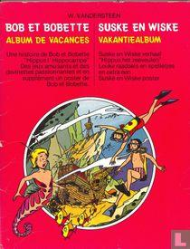 | Album de vacances - Vakantiealbum | Suske & Wiske | buiten reeks | Willy Vandersteen | https://www.lastdodo.nl/nl/items/10898923-album-de-vacances-vakantiealbum | 1976 | zeer goed | € 4,00 | |||
144 | 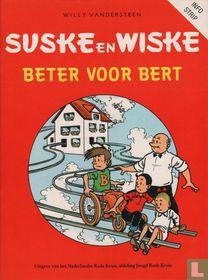 | Beter voor Bert | Suske & Wiske | buiten reeks | Willy Vandersteen | https://www.lastdodo.nl/nl/my/shop/items/29213183-beter-voor-bert?item_id=30094 | 1987 | | ||||
145 | 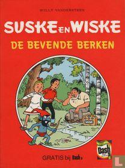 | De bevende berken | Suske & Wiske | buiten reeks | Willy Vandersteen | https://www.lastdodo.nl/nl/my/shop/items/29213165-de-bevende-berken?item_id=30070 | 1981 | | € 4,00 | |||
146 |  | De bevende berken | Suske & Wiske | buiten reeks | Willy Vandersteen | https://www.lastdodo.nl/nl/my/shop/items/29213167-de-bevende-berken?item_id=42677 | 1986 | | € 4,50 | |||
147 |  | De gouden bloem | Suske & Wiske | buiten reeks | Willy Vandersteen | https://www.lastdodo.nl/nl/my/shop/items/29213949-de-gouden-bloem?item_id=30067 | 1977 | | € 7,00 | |||
148 | 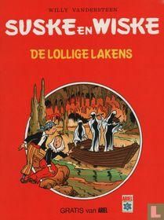 | De lollige lakens | Suske & Wiske | buiten reeks | Willy Vandersteen | https://www.lastdodo.nl/nl/my/shop/items/29213837-de-lollige-lakens?item_id=30064 | 1977 | | € 4,00 | |||
149 | 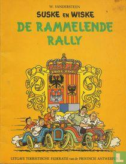 | De rammelende rally | Suske & Wiske | buiten reeks | Willy Vandersteen | https://www.lastdodo.nl/nl/my/shop/items/29213897-de-rammelende-rally?item_id=30134 | 1973 | goed | € 10,00 | |||
150 |  | De stenen broden | Suske & Wiske | buiten reeks | Willy Vandersteen | https://www.lastdodo.nl/nl/my/shop/items/29213161-de-stenen-broden?item_id=30069 | 1984 | | ||||
151 | 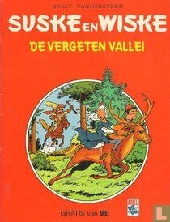 | De vergeten vallei | Suske & Wiske | buiten reeks | Willy Vandersteen | https://www.lastdodo.nl/nl/my/shop/items/29213809-de-vergeten-vallei?item_id=30063 | 1981 | | € 5,00 | |||
152 |  | De vliegende klomp | Suske & Wiske | buiten reeks | Willy Vandersteen | https://www.lastdodo.nl/nl/my/shop/items/29213911-de-vliegende-klomp?item_id=30136 | 1984 | | ||||
153 | 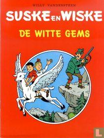 | De witte gems | Suske & Wiske | buiten reeks | Willy Vandersteen | 5 exemplaren | https://www.lastdodo.nl/nl/my/shop/items/29212997-de-witte-gems?item_id=30040 | 1982 | | € 3,00 | ||
154 | 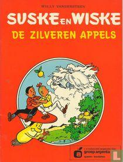 | De zilveren appels | Suske & Wiske | buiten reeks | Willy Vandersteen | groep argenta | https://www.lastdodo.nl/nl/items/30035-de-zilveren-appels | 1/9/1981 | goed | € 4,50 | ||
155 |  | Extra dik album | Suske & Wiske | buiten reeks | Willy Vandersteen | Reclame uitgaven Centra | https://www.lastdodo.nl/nl/my/shop/items/29213967-extra-dik-album?item_id=30027 | 1983 | zeer goed | |||
156 | 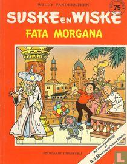 | Fata morgana | Suske & Wiske | buiten reeks | Willy Vandersteen | https://www.lastdodo.nl/nl/my/shop/items/29213193-fata-morgana?item_id=30073 | 1986 | | € 3,50 | |||
157 | 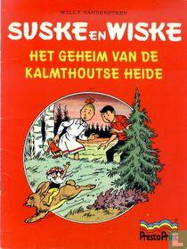 | Het geheim van de Kalmthoutse Heide | Suske & Wiske | buiten reeks | Willy Vandersteen | https://www.lastdodo.nl/nl/my/shop/items/29213819-het-geheim-van-de-kalmthoutse-heide?item_id=30100 | 1982 | | € 4,00 | |||
158 | 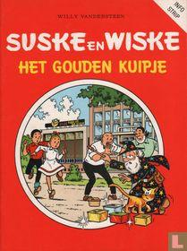 | Het gouden kuipje | Suske & Wiske | buiten reeks | Willy Vandersteen | https://www.lastdodo.nl/nl/my/shop/items/29214049-het-gouden-kuipje?item_id=30099 | 1989 | | ||||
159 | 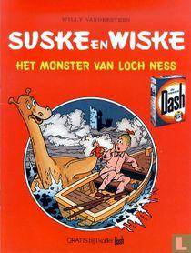 | Het monster van Loch Ness | Suske & Wiske | buiten reeks | Willy Vandersteen | https://www.lastdodo.nl/nl/my/shop/items/29213201-het-monster-van-loch-ness?item_id=30068 | 1978 | | € 4,00 | |||
160 | 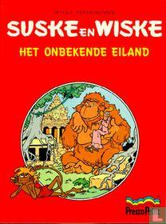 | Het onbekende eiland | Suske & Wiske | buiten reeks | Willy Vandersteen | https://www.lastdodo.nl/nl/my/shop/items/29212989-het-onbekende-eiland?item_id=30102 | 1978 | | € 7,00 | |||
161 | 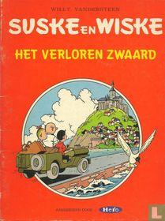 | Het verloren zwaard | Suske & Wiske | buiten reeks | Willy Vandersteen | https://www.lastdodo.nl/nl/my/shop/items/29212981-het-verloren-zwaard?item_id=30039 | 1983 | | ||||
162 | 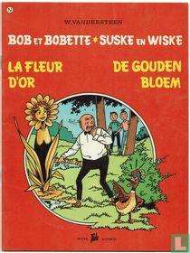 | La Fleur d'or - De gouden bloem | Suske & Wiske | buiten reeks | Willy Vandersteen | https://www.lastdodo.nl/nl/my/shop/items/29213929-la-fleur-d-or-de-gouden-bloem?item_id=30066 | 1977 | zeer goed | € 4,00 | |||
163 | 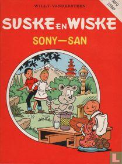 | Sony-san | Suske & Wiske | Suske en Wiske | Willy Vandersteen | https://www.lastdodo.nl/nl/my/shop/items/29214023-sony-san?item_id=30098 | 1977 | | € 3,00 | |||
164 |  | Toffe Tiko / Het verborgen volk | Suske & Wiske | buiten reeks | Willy Vandersteen | https://www.lastdodo.nl/nl/my/shop/items/29213987-toffe-tiko-het-verborgen-volk?item_id=30030 | 1981 | | € 4,00 | |||
165 | 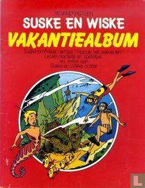 | Vakantiealbum | Suske & Wiske | buiten reeks | Willy Vandersteen | https://www.lastdodo.nl/nl/my/shop/items/156852087-vakantiealbum?item_id=10898913 | 1975 | zeer goed | € 3,00 | |||
166 | 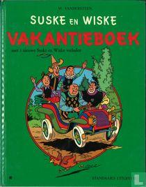 | Vakantieboek | Suske & Wiske | buiten reeks | Willy Vandersteen | https://www.lastdodo.nl/nl/my/shop/items/29214453-vakantieboek?item_id=30148 | 1974 | goed | € 6,00 | |||
167 | 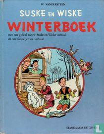 | Winterboek | Suske & Wiske | buiten reeks | Willy Vandersteen | https://www.lastdodo.nl/nl/my/shop/items/156820563-winterboek?item_id=10897877 | 1974 | | € 8,00 | |||
168 | 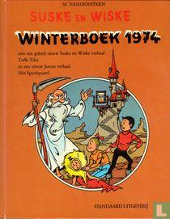 | Winterboek 1974 | Suske & Wiske | buiten reeks | Willy Vandersteen | https://www.lastdodo.nl/nl/my/shop/items/156819777-winterboek-1974?item_id=10897869 | 1975 | | € 10,00 | |||
169 | 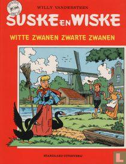 | Witte zwanen zwarte zwanen | Suske & Wiske | buiten reeks | Willy Vandersteen | Reclame uitgave voor Albert Heijn | https://www.lastdodo.nl/nl/my/shop/items/29213191-witte-zwanen-zwarte-zwanen?item_id=26835 | April 1987 | zeer goed | € 2,50 | ||
170 | 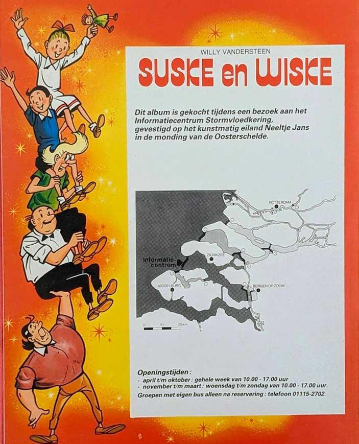 | 197 | Het Delta Duel | Suske & Wiske | buiten reeks | Willy Vandersteen | Gelegenheids uitgaven Deltawerken | https://www.lastdodo.nl/nl/items/29972-het-delta-duel | 01/04/1984 | zeer goed | € 25,00 | |
171 | 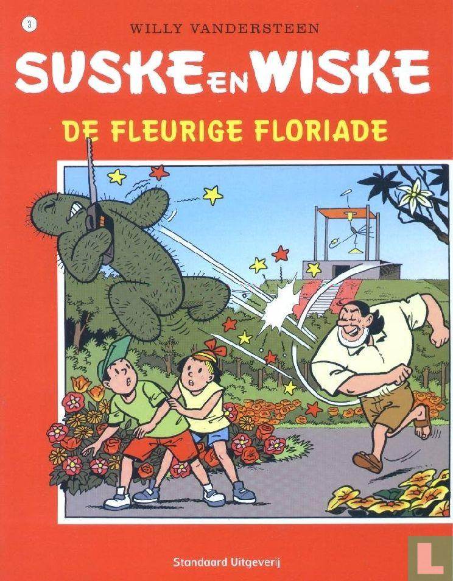 | 3 | De Fleurige Floriade | Suske & Wiske | buiten reeks | Willy Vandersteen | Gelegenheids uitgave Shell | https://www.lastdodo.nl/nl/items/111045-de-fleurige-floriade | 2005 | zeer goed | € 3,00 | |
172 | 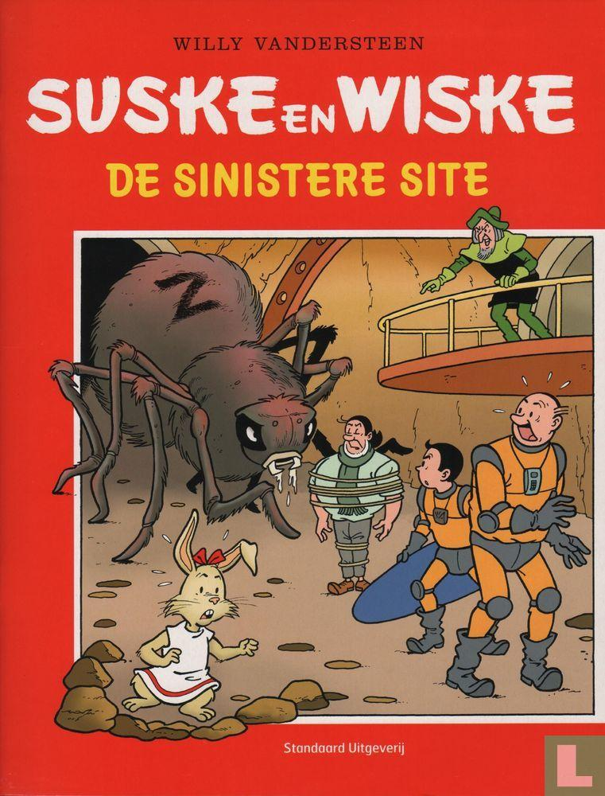 | De Sinistere Site | Suske & Wiske | buiten reeks | Willy Vandersteen | Kennisnet ICT op school | https://www.lastdodo.nl/nl/items/148933-de-sinistere-site | 2007 | als nieuw | € 1,00 |